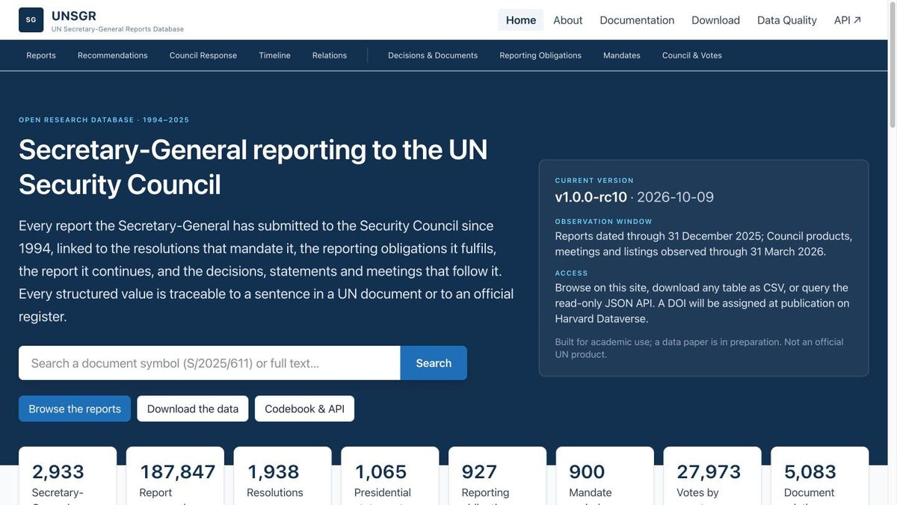
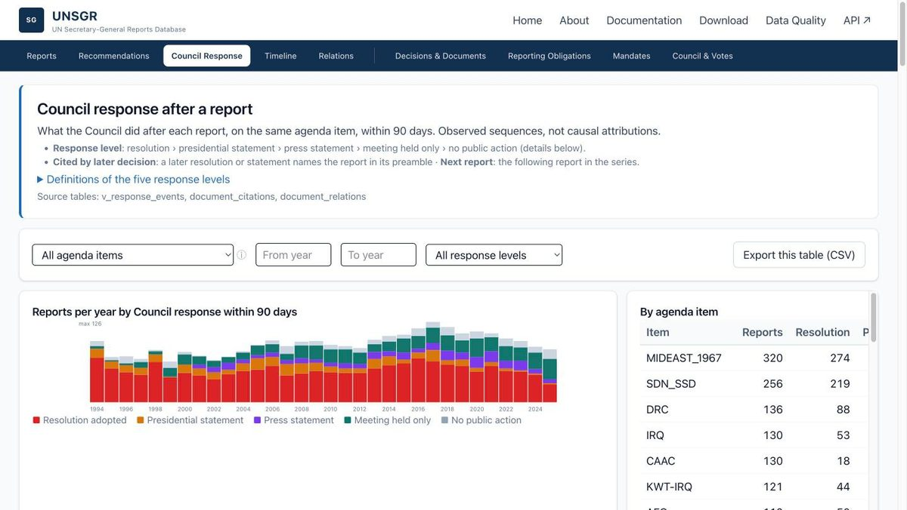
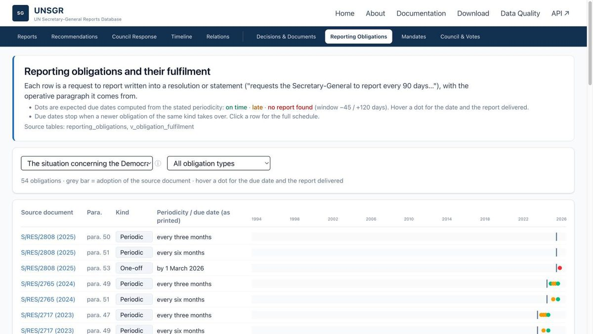
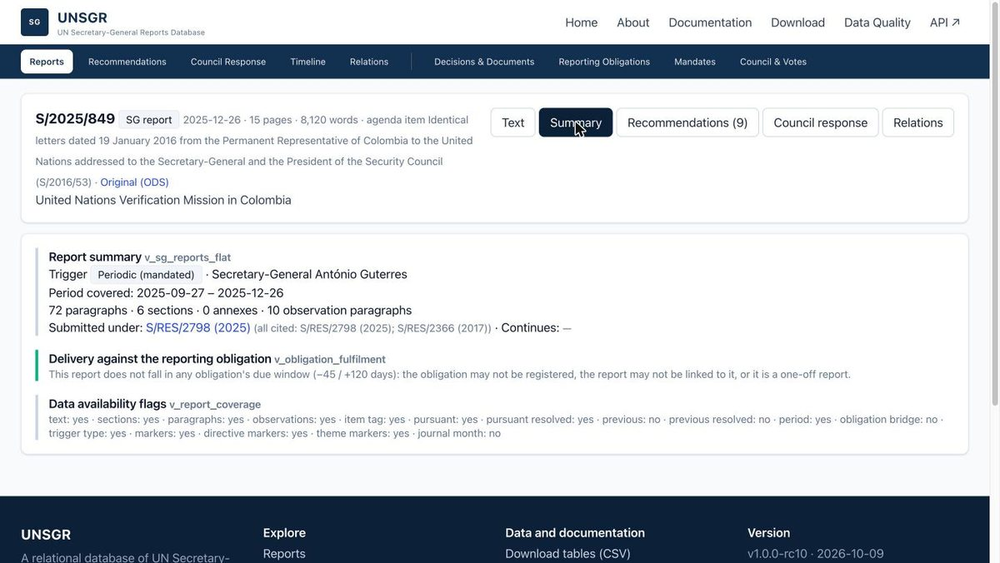
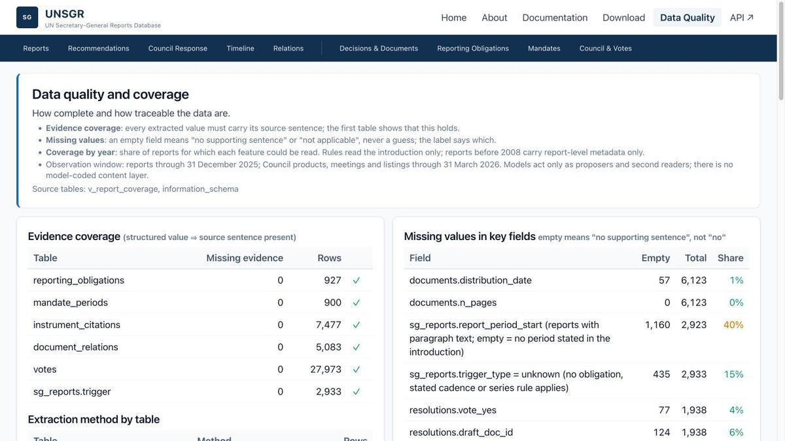
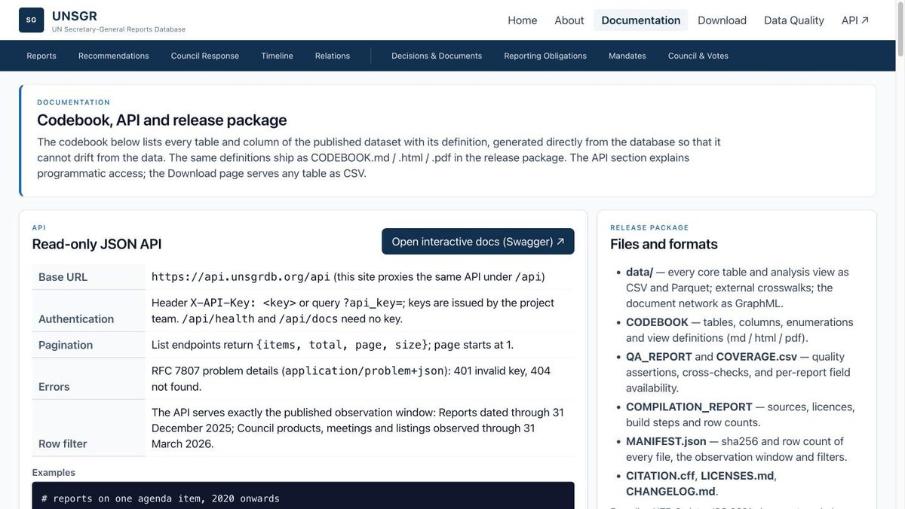

把 1994–2025 年 2,933 份秘书长报告，连同授权它们的决议、它们要履行的报告义务、以及报告之后安理会的回应，做成一个每个值都能回溯到原句的关系数据库，并以查询网站、CSV 和只读 API 发布。
国际关系学者要回答的问题是：安理会对秘书长报告有没有回应、回应到什么程度。做不了，有三个原因。
把"授权 — 报告 — 回应"定义成三类指标、21 个核心变量，逐条和合作者确认口径。回应程度按报告后 90 天内安理会的最高产出分五档（决议 / 主席声明 / 新闻声明 / 仅开会 / 无），再和报告在授权周期中位置对应的制度默认值比较，偏离默认值才算回应多或少。
合作方是非技术背景的领域专家，没有精力做全字段人工标注；直接用 AI 的结果又不可复现、过不了同行评审。所以：确定性规则只从报告开头段抽报告级字段，版本化、可回归；两家厂商的大模型只做"提议者和第二读者"，输出验证后才入库；人工只裁决模型之间有分歧的地方。先用 5 份报告双人试标定规则，沉淀 12 条编码规则，验收阈值事先锁定。
数据库分三层 schema：观察到的（core）/ 外部导入（external）/ 派生研究（research），research 层由脚本从 core 重建；主键用自然键（UN 文号、ISO 码、特派团缩写）。每个抽取字段带证据三件套：原句、位置、方法。空值分三类——来源没说、规则没够到、规则拒绝了位置不对的线索——都不等于"事实不存在"。






另有议题时间轴、文书关系网络、建议与呼吁统计、授权续期、安理会投票等页面，面试时可现场演示。
| 项目 | 结果 | 怎么验的 |
|---|---|---|
| 报告级字段精确率 | 0.971 – 1.000 | 密封测试集 44 份报告；金标准每字段 33–43 条，模型预标后人工逐句核验 |
| 报告级字段召回率 | 0.90 – 1.00 | 同上；规则取 precision-first，覆盖缺口在数据质量页逐年公开 |
| 授权期末日 | 20 / 20 一致 | 与安理会官方授权表逐条对照 |
| 国别投票 | 27,973 条逐票一致 | 与会议记录（SPV）对照 |
| 模型与规则层一致率 | 81.0% → 86.7% | 开发集 → 留出集；分歧归类裁决一次，把报告义务链接从 3,617 提高到 3,885 |
| 人工编码工作量 | 约 2 周 → 约 1 天 | 人工从全量标注变为只裁分歧 |
| 最重的全表查询 | 分钟级 → 约 1 秒 | 物化特征表 + 全文检索调优 |
| 首个可用版本 | 2 天 | 从全量抓取到可查询；此后按投刊标准收敛 |
合作方负责"问什么"：定研究问题、给领域判断、裁决分歧、写理论章节。我负责"怎么让答案可复现"：把研究问题翻成数据模型、变量和代码本；抓取与抽取管线；模型预标与验证设计；网站与 API；范围管理。论文的数据与验证章节由我主写。编码规则是两个人一起定的。
以 Claude Code 为工程搭档，三周独立交付；AWS + Docker 部署 FastAPI 与 React/TypeScript；API 密钥认证与行级安全同导出共用一个谓词。
项目要同时过期刊评审、供合作方使用，需求持续膨胀：议题名录方案复杂度超出核心目标，1.1 版承诺了 4 项尚不存在的功能，合作方一次提出 6 项修改建议。
我定了一条取舍标准——主体是报告与上下游文书，管线必须可复现——据此叫停复杂方案，砍掉 4 项承诺转为局限说明，6 项建议按必做 / 已做 / 不必分级回复取得共识；3 个第三方数据集经许可证确认后才导入。
站点在数据论文评审期内不公开，需要账号访问。面试或交流时可提供只读演示账号，现场演示任意议题的报告链、义务履行点阵与 API 调用。
方法说明与架构（不含数据）：GitHub README · 链接待上线。引用格式：UNSGR: UN Secretary-General Reports, 1994–2025. v1.0.0-rc10. Harvard Dataverse（DOI 待分配）。本项目非联合国官方产品。